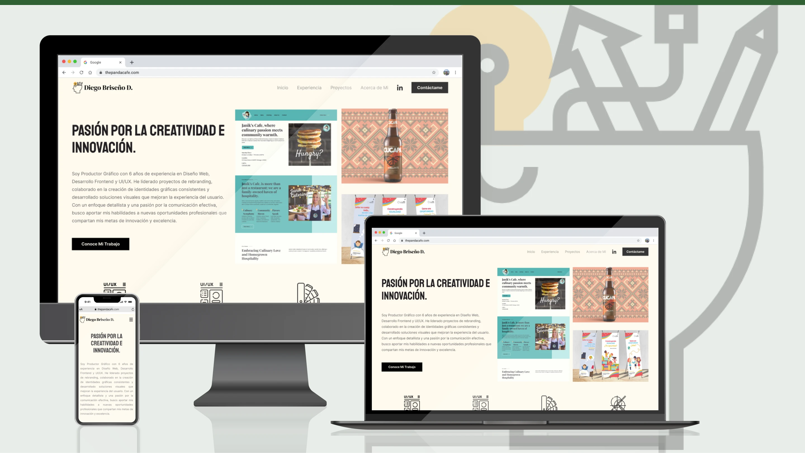
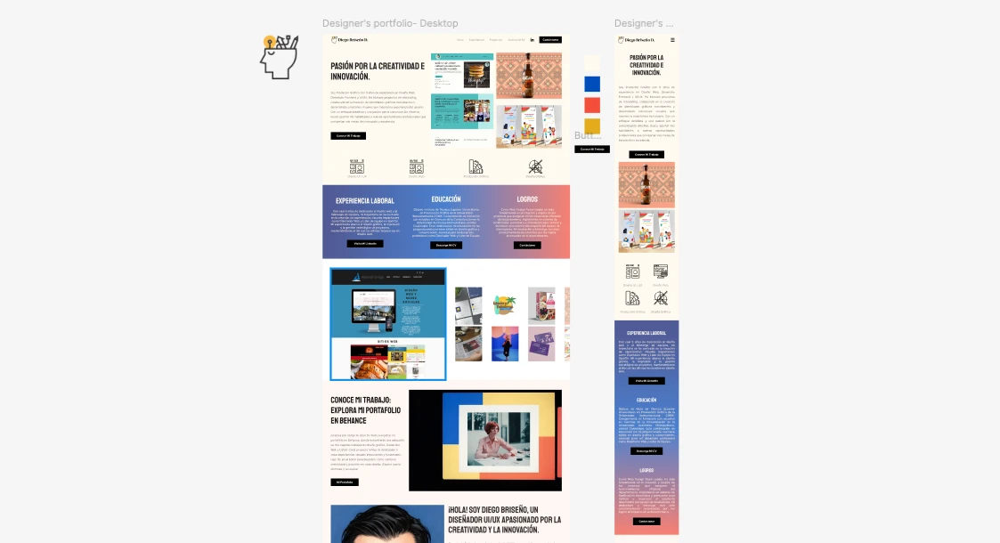

Diseño, Construcción y Publicación de mi Sitio Web
Proyecto integral enfocado en la creación de un producto digital personal, desde estrategia y diseño hasta desarrollo y publicación.
Este sitio web fue concebido como una plataforma para consolidar mi identidad profesional, presentar proyectos con narrativa estructurada y funcionar como herramienta activa de posicionamiento y captación.
UX / UI Designer · Webflow Designer
Producto Personal · Web Design
2022

Contexto
Como diseñador, necesitaba una plataforma propia que representara correctamente mis capacidades, proyectos y enfoque estratégico.
El uso de plataformas externas limitaba la personalización de la experiencia, el control narrativo y el posicionamiento profesional.
El objetivo fue construir un espacio digital autónomo, escalable y alineado a mis objetivos de crecimiento profesional.
El Reto
- ✔ Comunicar claramente mi perfil profesional
- ✔ Presentar proyectos con storytelling estructurado
- ✔ Mantener equilibrio entre diseño y performance
- ✔ Crear una experiencia clara y atractiva
- ✔ Funcionar como herramienta real de captación
El proyecto debía funcionar como un producto digital completo, no solo como una vitrina visual.
Proceso
Estrategia
Se definió una estructura clara basada en portafolio, presentación profesional y navegación simple, priorizando escalabilidad y claridad.
Diseño UX/UI
Se desarrolló un sistema visual minimalista con jerarquía tipográfica clara, espaciado amplio y componentes reutilizables enfocados en contenido.
Desarrollo
El sitio fue construido con la plataforma Webflow, priorizando código limpio y estructura mantenible.
Publicación
Se desplegó en un entorno público, funcionando como herramienta profesional activa para visibilidad y oportunidades laborales.
Resultado
- ✔ Plataforma personal completamente autónoma
- ✔ Portafolio estructurado y escalable
- ✔ Identidad profesional clara
- ✔ Herramienta activa de posicionamiento
- ✔ Control total sobre narrativa y contenido
El proyecto se consolidó como un activo profesional clave, integrando diseño, desarrollo y comunicación en un solo producto digital.

Conclusión
Este proyecto representa una síntesis de capacidades en diseño UX/UI, desarrollo front-end y pensamiento estratégico.
Demuestra la capacidad de construir productos digitales completos, desde la conceptualización hasta su ejecución y publicación.
Un producto personal que funciona tanto como portafolio como herramienta profesional.